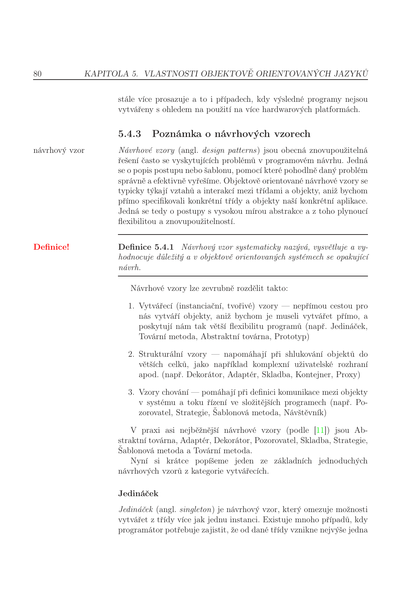

Mějme třídní OOJ s podporou výjimek, kde třída výjimky ExA má přímou podtřídu ExB a od ExB přímo dědí ExC. V hlavním těle programu mějme trojici bloků try-catch-finally (nazvěme je vnější) následovanou zbylým kódem, tzv. vnější epilog. Vnější catch-blok má formální parametr typu ExA. Uvnitř vnějšího try-bloku je trojice bloků try-catch-finally (nazvěme je vnitřní) a zbytek kódu vnějšího try-bloku označme jako vnitřní epilog. Vnitřní catch-blok má formální parametr typu ExC. Uvažujme, že na začátku vnitřního try-bloku dojde k vyvolání výjimky třídy ExB. Popište průběh ošetření výjimky v hlavním těle programu (až po případný návrat ke standardnímu modelu výpočtu), aby bylo jasné, které části kódu se vykonají a které ne a proč. (cca 4 souvětí)
try proběhne skok na příslušný
catch a na jeho formální parametr se naváže objekt výjimky.
finally je deklarativně označená sekce, která se
nepřeskočí ani při výjimce.
catch (ExC) výjimku ExB
nezachytí: handler pro typ ExC přijímá jen
ExC a podtřídy, ExB je v hierarchii
nad ExC, není jí podřízená.
catch se tedy neprovede. Vnitřní
finally se provede vždy. Vnitřní epilog vnějšího
try se neprovede (výjimka „probublá“ ven).
catch (ExA) už ExB zachytí
(ExB ⊆ ExA), na parametr se naváže objekt
výjimky. Pak následuje vnější finally a
nakonec při absenci dalšího šíření výjimky vnější
epilog — návrat k obvyklému sekvenčnímu výpočtu.Pomocí UML diagramu tříd navrhněte implementaci návrhového vzoru Pozorovatel (angl. Observer) pro staticky typovaný třídní OOJ s podporou abstraktních tříd. Variantu si vyberte dle libosti, ale uveďte kterou. U důležitých metod uveďte jejich pseudokód. Několika řádky kódu demonstrujte typické použití (instanciaci, provázání a použití) tohoto vzoru s využitím entit uvedených v UML diagramu. (UML diagram, ukázka kódu)
attach
/ detach).Subject + konkrétní subjekt (např.
ConcreteSubject) s metodami
attach(Observer o), detach(Observer o),
notify() a čtením stavu.
Observer s
update() + konkrétní pozorovatelé přepisují
update() (volitelně čtou stav u subjektu).

notify():
pro každé o v observers:
o.update()
ConcreteSubject.setState(x):
this.state = x
this.notify()ConcreteSubject s = new ConcreteSubject()
ConcreteObserver o1 = new ConcreteObserver(s)
s.attach(o1)
s.setState(42) // zajistí notify → o1.update()Definujte pojem typové proměnné známé nejen z funkcionálních jazyků. Vysvětlete (stručně, ale přesně): co to je, k čemu to je/co to umožňuje, ukažte obecný příklad využití, jaká je obdoba v jazycích jako C++, Java, C#?
length :: [a] -> Int vrací délku seznamu bez závislosti
na tom, zda jde o [Int] nebo [Char].
template<typename T> …) v C++,
generika (List<T>,
<T> u rozhraní/tříd) v Javě a C#. Typové
třídy (např. v Haskellu nebo Goferu) omezují, jaké operace musí
typ T mít — jde o nadstavbu nad holou typovou
proměnnou.
Stručně a výstižně definujte výčtem, co musí splňovat výstup kompilátoru modulárních programovacích jazyků, aby výsledný kód byl po „slinkování“ funkční — pozor, nemyslí se chyby v algoritmu, návrhu, implementaci, nebo v době linkování, ale vlastnosti kódu generovaného překladačem nutné pro správné propojení modulů. (Obecná věta plus cca 4-8 odrážky (dle detailu dělení). Všechny zkratky je nutné beze zbytku vysvětlit, ne jen rozvést, a přesně specifikovat jejich význam. Ne jen náznakem, nebo příkladem. Plně!)
Přesně definujte klíčové vlastnosti/jak lze charakterizovat uzavřený podprogram. (4 odrážky)
Proveďte a demonstrujte po krocích potřebné α-, β-konverze tak, aby zadaný λ-výraz neobsahoval β-redex. (λxz.xz(λz.z))(λxz.z)
z od vnější
abstrakce): (λxz.xz(λz.z))(λxz.z) ≡
(λxz.xz(λw.w))(λxz.z).
G = λxz.z): výsledek je
λz. ((λxz.z) z) (λw.w). První aplikace
(λxz.z) z: přejmenujeme λxz.z na
λxλz'.z' a substituujeme x := z, dostaneme
λz'.z'.
(λz'.z')(λw.w) →β
λw.w. Celkově λz. λw.w.
(λ… …) … už není — výraz
je v normální formě (až na α ekvivalenci např.
λa.λb.b).
Prémie: Máme-li dvoudimenzionální pole v jazyce C (bez modifikátorů, tedy se zarovnaným uložením), velikost dimenzí nechť je po řadě sizeX a sizeY — tedy a[sizeX][sizeY]. Prvkem pole je struktura s následujícími členy, po řadě: celé číslo, ukazatel, celé číslo, ukazatel, desetinné číslo, znak. Velikosti jsou: celé číslo 4 bajty (32 bitů), ukazatel 4 bajty, znak 1 bajt (8 bitů), desetinné číslo 8 bajtů (64 bitů). Vytvořte generický výraz pro určení adresy znaku na pozici a[i][j], když pole je umístěno od adresy A a architektura je 32bitová. Jak by se výraz změnil, kdyby byly zapnuty modifikátory pro těsné uložení struktury? Nejde o postup výpočtu, jde o jeden generický aritmetický výraz, do kterého když dosadíme konkrétní hodnoty pro dané konstanty a proměnné, tak dostaneme adresu v paměti.
double
zarovnaný na 8).
a[i][j] (řádkové
uložení pole):
A + (i · sizeY + j) · sizeof(S) + 24.
#pragma pack(1)):
žádné mezipaddingy mezi členy,
sizeof(S) = 4+4+4+4+8+1 = 25, offset znaku
stále 24.
A + (i · sizeY + j) · 25 + 24.
__class__ (odkaz na třídu)
a __dict__ s instančními
atributy. Metody v __dict__ instance
obvykle nejsou — dohledávají se přes třídu a
MRO.type a má mimo jiné
__bases__,
__dict__ kde jsou metody
a atributy třídy (např. u třídy Circle
může být v __dict__ třídní konstanta pi).
try: chráněný blok kde může vzniknout
výjimka. catch / except:
výběr handleru podle typu výjimky (často i podtřídy).
finally: proběhne při opuštění bloku
try touto cestou vždy i když výjimku daný
catch nezachytí a probublá výš.
finally
vnitřních bloků po řadě od nejvíc vnitřního ven. V češtině často
zkusit / kromě / nakonec (Java), v Pythonu
try / except /
finally.
@dekorátor jen
zapisuje funkci vyššího řádu, která obalí původní funkci nebo
metodu.x a druhý
term t postupuj podle testu výskytu
(occurs check). Pokud se x
nevyskytuje v t přidej substituci
x := t jinak selhání.
#include). Obě
vznikají až při skládání projektu nebo před
vlastním překladem jednotky.
catch bere typ
ExA, vnitřní catch typ
ExC. Na začátku vnitřního
try vznikne výjimka ExB.
catch (ExC)
ExB nechytí, protože handler pro ExC
bere jen ExC a podtřídy ExB je v
hierarchii nad ExC.
finally.
Vnitřní epilog vnějšího try se neprovede,
výjimka probublá k vnějšímu
catch.
catch (ExA) už
ExB zachytí. Proběhne vnější
finally a pak vnější epilog návrat k
běžnému sekvenčnímu řízení.
Adaptee) rozhraní, které čeká klient
(Target). Objektový adapter
implementuje Target a drží
odkaz na instanci Adaptee. Metoda
request() deleguje na specificRequest()
adaptee, případně obalí převodem dat.
Target,
Adapter realizuje Target, asociace na
Adaptee.
interface Target { void request(); }
class Adapter implements Target {
private Adaptee a;
Adapter(Adaptee a) { this.a = a; }
void request() { a.specificRequest(); }
}Hlava :- Tělo1, Tělo2, … což
odpovídá Hornovské podobě (hlava je jediný pozitivní literál v
klauzuli).
rodic(tom, X) s rodic(tom, ann) → substituce
X = ann. U strukturovaných termů postupuj
rekurzí podle funktorů a arity.
Eq,
Ord) je rozhraní požadavků na typ: které
operace musí typ mít a jak jsou pojmenované. Není to
„typ proměnné“ ani konkrétní typ hodnoty.
a v zápisu [a] → Int)
který se při kontrole nahradí konkrétním typem. Typová
třída k tomu přidává omezení „a musí umět
==“ zápis Eq a => ….
extern deklarace a dopředné
deklarace funkcí typů nebo oddělené hlavičky
aby kompilátor znal signatury dřív než definiční soubor závislého
modulu.
double na 8 B hranici). Mezi členy mohou být
mezipaddingy, celková velikost je násobek alignmentu
struktury.
struct může mít jiné sizeof
na jiném procesoru pokud jinak platí ABI.
. a předávání jako celek.
Nevýhody: závislost na paddingu při přenosu binárních
dumpů, nutnost offsetof / #pragma pack pro
síťové protokoly.
static_assert(sizeof…).
(λcd.c(λc.c)d)(λcd.d)P = λcd.c(λc.c)d jako
levé asociativní aplikace v těle
((c (λc.c)) d) (jiný zápis závorek by
měnil význam).
Q = λcd.d je
λc.λd.d funkce která vrací druhý argument
(ignoruje první).
P Q po β:
λd. (((λc.λd.d) (λc.c)) d). Platí
(λc.λd.d) X → λd.d pro
libovolné X, takže (λc.λd.d)(λc.c) →
λd.d.
(λd.d) d → d, celkově
λd.d, což je po α přejmenování totéž co
identita λx.x v normální formě.
(Číslování doplňuje řádný termín 23–24. Otázky 2–7 a 9–11 jsou zde vynechány protože stejné látky už máš u příslušných bodů v části 24–25.)
## 24-25,
### 1.termín, bod 1 (je
tam i Python).
global nebo nepoužije $GLOBALS[…].
Globální prostor skriptu je oddělen od lokálních funkcí
— bez global uvnitř funkce nepřistoupíš k globální proměnné
stejného jména. Existují superglobály
($_GET, $_POST, $_SESSION, …)
dostupné odkudkoliv. static uvnitř funkce
drží hodnotu mezi voláními při lokálním jménu.
union: všechny členy
začínají na stejné adrese velikost aspoň
max(sizeof členů) po zarovnání podle
nejnáročnějšího člena.
#pragma pack) jako u
struct binární přenos union mezi stroji je bez
obezřetnosti riskantní.
(Položku o uložení struct v C neuvádím znovu, je
vypracovaná výše u ## 24-25 →
### 1.termín → bod
8.)
malloc / free v C).
operation()).
List implementuje rozhraní a nemá děti.
Skladba (Composite) drží kolekci dětí typu Komponenta,
u metod typicky rekurzivně deleguje na děti (např.
průchod celým stromem).
operation() na kořeni přes
stejné rozhraní jako u listu a nemusí rozlišovat jeden
uzel od celé podsoustavy. U bezpečného („safe“) složení
bývá část API jen na Composite u
transparentního rozhraní může být u všech vrstev stejné
a nevhodné operace na listu řešíš výjimkou nebo prázdnou
implementací.
Composite.operation() a jedna věta k čemu
slouží (jednotné zacházení s jednou větví i celým podstromem
např. v GUI nebo dokumentu).
x, druhý
term t → Occurs check. Nevyskytuje-li se
x v t, přidej {x ↦ t}, jinak
selhání. Dva atomy bez proměnné → jen při shodě
symbolu. Dva složené termy → stejný funktor a
arita, jinak selhání, jinak rekurze po argumentech a
skládání substitucí (aplikovat už
vzniklé substituce na další dílčí termy).
T₁ = p(X, f(a)),
T₂ = p(b, f(Y)). Symbol p i
arita souhlasí. První argumenty: proměnná
X a konstanta b → σ₁ = {X ↦ b}.
Druhé argumenty f(a) a f(Y) po srovnání
funktoru f: konstanta a a proměnná
Y → σ₂ = {Y ↦ a}. MGU
(složení σ₂ ∘ σ₁): {X ↦ b, Y ↦ a}.
#1 / #2 u řešení Robinsona
níže v tomto souboru (read(…) /
gain(…) s výsledným složením substitucí).
doba života proměnné + f(x) g(y) v C
instance a třída v OOJ atributy a metody rozdíly
Exception
Vyhodí se Exception a má podtřídy Ex1 a ta má podtridu Ex2
Dva catch bloky co chytají Ex1 a Ex2
Skladba UML kód popis
popsat linker a chyby
Robinson
strukturované jazyky čím se muže předat parametr
kontroly za běhu co nejsou typové ani existenční
lazy evaluation
lambda
(.a(a.a)b)(.a)
Bonus 2D pole v C
Bodmi si teraz nie som istý, ale cca by to malo sedieť
Thanks: gunter, Dosral som sa, tedro, penpem, … <3
Rozsah platnosti (scope) + čo určuje typ premennej (3 odrážky) (5b)
Exceptions (8b)
x(){
try {
throw new IOEx
m()
} catch Exception {
throw new MathEx
} finally {
k()
}
}
x();
z();Slovný popis by penpem:
Uvazujte volanie metody x() a z() v hlavnom tele funkcie. V metode x je trojica blokov try-catch-finally. V try bloku dochadza k vyvolaniu vynimky IOException. Za vyvolanim vynimky IOException je este volanie metody m. V catch bloku sa nachadza vyvolanie MathEx. Vo finally bloku je este nejake jedno volanie. Ku kazdemu volaniu metody uvedte ci sa uskutocni a preco ano/nie.
Abstract factory - na čo je, UML, implementácia dôležitých metód (asi
to napísať do UML diagramu ako je to v prednáškach), príklad
použitia napr. v metóde klienta (9b)
Modulárne jazyky (7b):
Imperatívne vs deklaratívne nielen z pohľadu programátora (5b)
Strict evaluation (nielen vo funkcionálnych jazykoch) (7b)
Lambda kalkul - upraviť aby tam neostali žiadne Beta-redex či čo (6b)
(.ab(b))(.b)
Robinsonův algoritmus - na čo je, čo sú vstupy, čo výstupy a popísať
krok po kroku ako funguje (ak dobre pamätám) (9b)
Napíš štyri rôzne sémantické chyby teoreticky zistiteľné dynamicky
(počas behu) v jazyku C (áno, písalo tam “teoreticky”) (4b)
BONUS: (8b?)
Majme 2D pole (x * y) štruktúr:
Int (4B), pointer (4B), pointer (4B), int (4B), char (1B), double (8B)ak pole začína na adrese A, napíšte výpočet pre adresu doublu na [x][y]
popíš čo by sa zmenilo, ak by sa zapol nejaký kompaktný mód alebo čo.
Proste že sa tie položky nejak užšie skladajú za seba alebo tak
Co je syntaxe, čím ji definujem a Cčko věci při překladu (syntakticky a sémanticky správně, ale překlad to zhodí)
Jednoduchá dědičnost [ahojjasomalex]
Máš jazyk s možností definování funkci uvnitř funkce (pascal) potom jazyk co umožňuje definovat proměně v sekcích (ci tak něco). Ani jeden však nemá možnost globálních proměnných. Existuje způsob jak uživatelsky nějaká používat něco jako globální proměně? Ve kterém z těchto jazyků? Proč? Jaké vlastnosti proměnných se používají [Vlček]
NV Dekorátor popsat + pseudokód
Strukturovaný jazyky? jak je struct v Cčku nebo tak něco
jak by se udělala globální proměnná v Pascalu a ANSI C, kde to jde udělat a jak [Křivoš]
Uzavřenej podprogram
unifikovat nějak chujoviny
Lambda
funkcionalní x logický jazyky charakteristický rysy
No bonus
Co to je životnost proměně? Jaký máji vztah dvě proměně které jsou
definovane v parametrů dvou funkci např f(x) a f(y). Napiš ke každému
typu dvě až tři odrazky [6]
Popisat Rozhranie
Try-catch-finally (vnější–vnitřní blok)
Adapter ale skorej prakticky
Linker
Funkcionalne jazyky z coho maju nazov garbage collector a tusim
typova premenna
Predavanie parametru hodnotou
Lambda kalkul
SLD rezolucia
Citanie hodnoty z bitoveho pola v assembleri - Měj me třetí položku
struktury ze které chceme vyčíst první 4 bity z neznamenkoveho bitoveho
pole. Položka je posunuta o 7 bitů. První plozka je 8 bajtova hodnota,
druhá 4 bajtova. Pracuje v systému s 32 bitovou architekturou a little
endia. Začátek struktury je na adrese A. Použité operace z jazyka c aby
jsem dostali požadovanou adresu. Nepracuje však v jazyku c! Používat
pouze jeho operace.
Poradie je inak hlavne ku koncu
scope + ty věci okolo
robinson ten kod
try catch
dekorator
Rozdíl imperativní/deklarativní
Strict evoluation
Lambda
Něco s dvojrzormernym polem
modulární jazyky, nějaký ty otázky okolo cyklení
Dynamické semanticke analýzy 4 příklady
doba zivota promenne
adapter na konkretnim prikladu
try-catch-finally
linker, jak funguje, mozny chyby
pseudoassmebler, struktura, bitfield
garbage collector ve funkcionalnich jazycich, jak funguje, nevyhody
popsat algoritmus SLD rezoluce
lambda
bonus popsat python
syntax, 4 odrážky ktorými ho môžme definovať, 2 chyby v C ktoré sa
daju zachytiť pri preklade a niesu syntaktické ani sémantické
problémy pri ukladaní inštancií pri viacnásobnej dedičnosťi
Ako je definovaná štruktúra/záznam (nebolo to s rekurzivným použitím,
niečo iné) + ešte nejaké veci vysvetliť
výnimky Exception s dvomi podtriedami ExA, ExB
4a. Exception, klasický try-catch-finally
4b. ExA, co ak sa pri obsluhe catch vyhodi dalsia vynimka?
robinson príklad
rysy pre funkcionalne a logické jazyky (2x3)
adapter (UML, kod) popis
uzavretý podprogram, 4 odrážky
Máme dva jazyky, jeden podporuje definiciu funkcie uprostred
definicie funkcie a druhy podporuje len lokalne premenne a lokalne
definicie funkcii… v ktorom z nich mozno na uzivatelskej urovni akosi
“simulovat” pouzivanie globalnych premennych a aka vlastnost jazyka to
povoluje (rozsah platnosti premennych)
lambda výraz (.( w u.w) s t)( z.z)
definice semantiky, 4 typove ruzne semanticke chyby ktere C detekuje pri prekladu (5b)
vlastnosti tridy OOJ s jednoducho ded. (4b)
try-catch (6b)
NV observer - nebyl konkretni priklad jen nakreslit UML + kod na zakladni funkcionalitu. Mohli jsme si vybrat jaky
typ observera (8b)
2 vety o tom jak se vzajemne ovlivnuji moduly. Vybrat 1 a popsat prikladem? (4?b)
jak se predavajim parametry do podprogramu. Strucne ale vystizne jednotlive popsat
prakticky robinson (8b)
#1
read(X, hi(S), nieco(V, U) )
read(256, U, nieco(X, Y) )
“read(256, hi(S), nieco(256, hi(S) )”
“read(256, hi(S), nieco(256, hi(S) )”
mgu = [256/X] o [hi(S)/U] o [256/V] o [hi(S)/Y]
#2
gain( mod(L,22), V, neviem(V, L) )
gain( X, X, neviem(V, L) )
“gain(mod(L,22), mod(L,22), neviem(mod(L,22), L) )”
“gain(mod(L,22), mod(L,22), neviem(mod(L,22), L) )”
mgu = [mod(L,22) / X] o [mod(L,22) / V]
co je to ukazatel (3 slova). Jak ukazatel ovlivnuje architektura (3 odrazky max 10 slov celkem), co nese ukazatel
(4b)
32bit architektura, pole {char, char, int}, kolik zabere mista v pameti se zarovnanim, kolik na tesno. Jak se
dostaneme k intu (vypocet) (6b)
lambda kalk (6b)
(.xxy)(.y)
(.(.y)(.y)y)
(.(.y)y)
.y